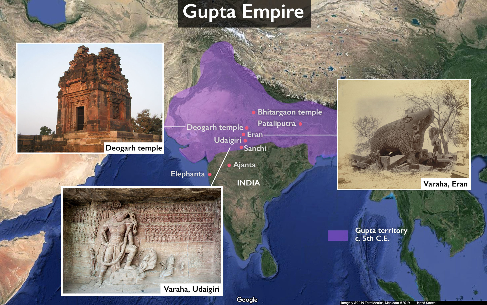

Introduction
The Gupta Empire marked a high point in Indian civilization, renowned for its achievements in art, science, mathematics, and literature.
A gold coin from the Gupta period showcasing imperial craftsmanship
Cultural Achievements
The period saw the composition of great Sanskrit literature, development of classical art forms, and scientific advances like the concept of zero.
Notable Rulers
Chandragupta I, Samudragupta, and Chandragupta II led the empire during its most prosperous phases, encouraging learning and tolerance.
Legacy
Often referred to as India's Golden Age, the Gupta period left a lasting legacy in South Asian culture, science, and governance.